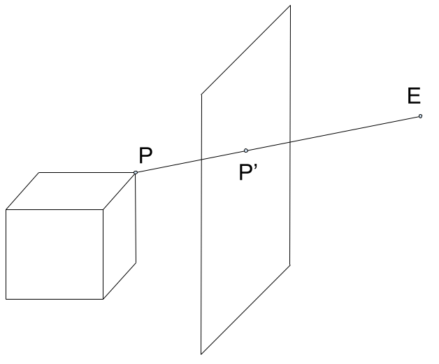

Proiezione
L'obbietivo dell'applicativo è proiettare due mani per formare delle ombre cinesi sullo schermo di un palco, creando quindi la proiezione degli oggetti 3D sul piano utilizzando la geometria proiettiva.
Il modello utilizzato è quello formato da:
- Il centro di proiezione, che chiamiamo punto E, che funge da punto di vista
- Il piano immagine, o schermo, che chiamiamo π, disgiunto dal punto E
- L'oggetto da proiettare, disgiunto dal punto E e dal piano π
Prendiamo in considerazione la retta passante per il punto P, appartenente all'oggetto, e il punto E. Tale retta interseca il piano in un punto P', che rappresenta la proiezione di P sullo schermo stesso.
Tutti i punti nello spazio hanno un unico corrispondente che giace sullo schermo, ma la rappresentazione non è biunivoca, perché possono esserci punti differenti nello spazio 3D che sono rappresentati sul piano dallo stesso punto.

L'ombra è il risultato della proiezione della mano a partire dal punto E, che rappresenta il punto di vista della proiezione. Il piano π, invece, corrisponde allo schermo del palco, cioè la parete su cui verrà proiettata l'ombra. La mano, oggetto proiettato, è disgiunta da entrambi questi elementi e non ha punti in comune con essi.
La proiezione si ottiene individuando i punti di intersezione tra il piano di proiezione e le rette passanti per il punto E e i vertici dell'oggetto.
In particolare, trattandosi di un oggetto complesso, ad ogni faccia facciamo corrispondere un triangolo proiettato, i cui vertici vengono utilizzati per creare la mesh dell'ombra completa.
Intersezione retta-piano
Dato un vertice P del poligono, la retta r passante per i punti P ed E è definita dalla seguente equazione
Il piano π è posizionato, per semplicità, ortogonalmente al vettore (-1,0,0) ed è passante per l'origine degli assi. La sua equazione è quindi
Per calcolare il punto di intersezione tra la retta r e il piano π è sufficiente calcolare il parametro t sostituendo i parametri della retta nell'equazione del piano
Trovato t è possibile sostituirlo nell'equazione della retta r per ottenere le coordinate del punto di intersezione.
In alternativa è possibile calcolare la matrice M di proiezione e procedere tramite calcolo matriciale, ottendendo così le coordinate dell'intersezione a meno di un fattore di proporzionalità.
Ripetendo il procedimento per ogni vertice di ogni triangolo del modello si ottengono i punti della proiezione, cioè dell'ombra cercata.
Trasformazioni geometriche
Con l'obiettivo di mettere a disposizione varie rappresentazioni di ombre è necessario applicare trasformazioni affini all'oggetto e ai sotto-oggetti di cui è composto, in modo da poterlo traslare e ruotare.
Una trasformazione affine è una classe di trasformazioni geometriche che preserva la linearità delle rette e la coplanarità dei punti. In altre parole, durante una trasformazione affine, i punti allineati rimarranno allineati, e i punti che giacciono sullo stesso piano prima della trasformazione continueranno a farlo dopo la trasformazione.
Essa può essere descritta come
Dove A è una matrice quadrata invertibile.
Le trasformazioni affini includono traslazioni, rotazioni, ridimensionamenti, e riflessioni. Nell'ambito della nostra applicazione, utilizziamo traslazioni e rotazioni per posizionare e orientare correttamente le mani sul piano di proiezione.
Rototraslazione
Si ha una trasformazione di traslazione se A = I e c ≠ 0. c rappresenta il vettore di traslazione che sposta ogni punto P in P' tale che P' - P = c. La traslazione è una operazione commutativa ed è chiusa in quanto la composizione di più traslazioni è essa stessa una traslazione.
La rotazione è definita attorno agli assi locali dell'oggetto. Per ogni asse attorno al quale si deve ruotare si definisce un angolo di rotazione che viene applicato dalla matrice di rotazione che ruota l'oggetto su ogni asse indipendentemente.
La combinazione sequenziale di trasformazioni affini offre una flessibilità fondamentale per ottenere diverse rappresentazioni di ombre, consentendo variazioni nelle posizioni e orientamenti delle mani. Ad esempio, per determinare la posizione finale di un punto sulla falangetta del dito indice, è necessario combinare le rotazioni della falangetta, della falangina, della falange e del polso.